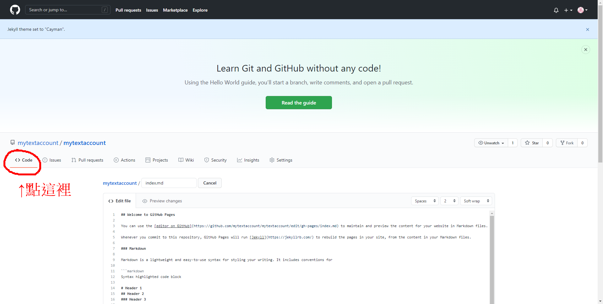

目錄 首頁 第一步 第二步 第三步 第四步 第五步 第六步 第七步 夥伴の網站 蔡姓夥伴
第一步:建立一個github帳戶
第二步:註冊完後點擊左上角的Create repository
第三步:輸入你的網頁網址(建議填入:帳號名稱)(這樣網站的連結才會是「帳號名稱.github.io」)
第四步:創建完後點擊Settings
第五步:下拉到GitHub Pages然後點擊Choose a theme
第六步:先隨便選一個主題(以後用不到)然後點擊Select theme
第七步:完成後點Code把你的網頁內容丟到Add file就成功囉!